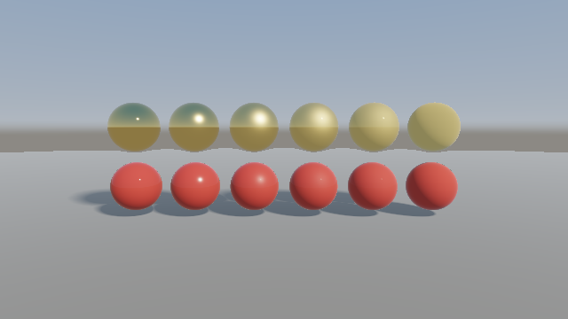
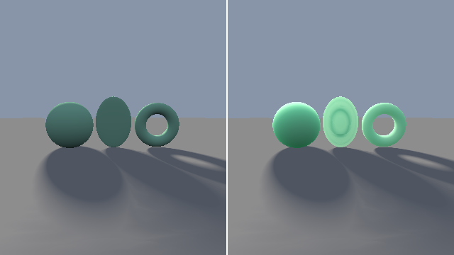

第 12 章 物理ベースの材質
第 5 章の照明モデルでは、鏡面反射を Blinn-Phong モデルで近似した。このモデルは計算が軽いが、金属と非金属の違いや、表面の粗さによるハイライトの広がりを、物理的に一貫した形で表せない。この章では、現在のリアルタイムレンダリングで標準的に使われている、マイクロファセット理論に基づく PBR （physically based rendering、物理ベースレンダリング）の材質を扱う。後半では、光が物体の内部に入り込んで散乱するサブサーフェススキャッタリングの近似を説明する。

12_pbr.frag の実行結果。上の列は金属、下の列は非金属で、左から右へ粗さを 0.05 から 1 まで大きくしている。
12_pbr.frag をダウンロード ｜ ブラウザーで実行
マイクロファセット理論
考え方
実際の表面は、顕微鏡で見ると細かな凹凸で覆われている。マイクロファセット理論では、表面を、向きがさまざまな無数の微小な鏡（マイクロファセット）の集まりとみなす。光源の方向 \(\hat{\mathbf{l}}\) から来た光が視点の方向 \(\hat{\mathbf{v}}\) に反射されるのは、法線がハーフベクトル \(\hat{\mathbf{h}}\) （第 5 章）を向いているマイクロファセットだけである。滑らかな表面ではマイクロファセットの向きが揃っているので、ハイライトは小さく鋭くなる。粗い表面では向きがばらつくので、ハイライトは広がって弱くなる。
この考え方から、鏡面反射の BRDF は次の Cook-Torrance の式で表される。
項 |
意味 |
|---|---|
\(D\) （法線分布関数） |
マイクロファセットの法線が \(\hat{\mathbf{h}}\) を向いている割合。ハイライトの形と大きさを決める。 |
\(G\) （幾何減衰項） |
マイクロファセット同士が光や視線を遮る割合。斜めから見たり照らしたりするときに効く。 |
\(F\) （フレネル項） |
マイクロファセットで反射される光の割合（第 11 章） |
法線分布関数
法線分布関数には、GGX（Trowbridge-Reitz 分布、Walter et al., 2007）がよく使われる。粗さのパラメーターを \(\alpha\) とすると、次の式で表される。
GGX は、Blinn-Phong のべき乗の分布に比べて、ハイライトの周りに長く尾を引く分布を持ち、実際の材質の測定結果によく一致する。\(\alpha\) は、人間が指定する粗さ \(r \in [0, 1]\) の 2 乗 \(\alpha = r^2\) とすることが多い。こうすると、\(r\) の変化に対して見た目の変化がほぼ均等になる（Karis, 2013）。
95// GGX の法線分布関数。alpha は粗さの 2 乗
96float distributionGGX(float nh, float alpha)
97{
98 float a2 = alpha * alpha;
99 float d = nh * nh * (a2 - 1.0) + 1.0;
100 return a2 / (PI * d * d);
101}
102
103// 幾何減衰項: Smith の方法を Schlick-GGX の式で近似したもの
104float geometrySmith(float nv, float nl, float roughness)
105{
106 float k = (roughness + 1.0) * (roughness + 1.0) / 8.0;
107 float gv = nv / (nv * (1.0 - k) + k);
108 float gl = nl / (nl * (1.0 - k) + k);
109 return gv * gl;
110}
111
112// Schlick の近似によるフレネル反射率 (第 11 章)。f0 は RGB ごとの値
113vec3 fresnelSchlick(float cosTheta, vec3 f0)
114{
115 return f0 + (1.0 - f0) * pow(1.0 - cosTheta, 5.0);
116}
幾何減衰項には、Smith の方法を Schlick の式で近似したものを使っている。係数 \(k = (r + 1)^2 / 8\) は、平行光源などの直接光に対して Karis が示した値である。フレネル項は第 11 章と同じ Schlick の近似だが、垂直入射での反射率 \(F_0\) を RGB ごとの値にしている。
金属度と粗さ
材質の指定
PBR では、材質を少数の直感的なパラメーターで指定する。本資料では、広く使われている次の 3 つを使う。
パラメーター |
意味 |
|---|---|
ベースカラー |
非金属では拡散反射の色（アルベド）、金属では鏡面反射の色 |
金属度（metallic） |
0 は非金属（誘電体）、1 は金属。中間の値は、金属と非金属の境目を表すのに使う。 |
粗さ（roughness） |
0 は鏡のように滑らか、1 は非常に粗い |
金属と非金属では、光の反射の仕方が大きく異なる。
非金属: 表面で反射される光（鏡面反射）は少なく、垂直入射での反射率 \(F_0\) は 0.02〜0.05 程度で、色を持たない。残りの光は内部に入って散乱し、ベースカラーの色で拡散反射される。
金属: 内部に入った光はすぐに吸収されるので、拡散反射は無い。鏡面反射の反射率は高く、\(F_0\) そのものが金属の色（金は黄、銅は赤みを帯びる）になる。
この違いを、金属度で次のように補間する。
\(m\) は金属度である。\(\mathbf{k}_d\) は拡散反射に使われる光の割合で、鏡面反射された分 \(F\) と、金属の分 \(m\) を除いたものである。
エネルギー保存と照明の合成
拡散反射の BRDF は、第 5 章で省略した \(1/\pi\) を含めて \(\mathbf{k}_d\, \mathbf{c}_{\text{base}} / \pi\) とする。鏡面反射と合わせると、光源による表面の色は次のようになる。
\(\mathbf{E}\) は光源の放射照度（光に垂直な面が受ける光の強さ）である。鏡面反射と拡散反射の割合を \(F\) で分け合うため、表面が受けた以上の光を反射することはない（エネルギー保存）。この性質により、粗さや金属度をどのように変えても、材質の明るさが不自然にならない。
118// 材質 (色、金属度、粗さ) を持つ表面の色を求める
119vec3 shadePBR(vec3 p, vec3 n, vec3 v, vec3 baseColor, float metallic,
120 float roughness)
121{
122 vec3 l = LIGHT_DIR;
123 vec3 h = normalize(l + v);
124 float nl = max(dot(n, l), 0.0);
125 float nv = max(dot(n, v), 1e-4);
126 float nh = max(dot(n, h), 0.0);
127
128 // 垂直入射での反射率: 非金属は 0.04、金属は色そのもの
129 vec3 f0 = mix(vec3(0.04), baseColor, metallic);
130 vec3 f = fresnelSchlick(max(dot(h, v), 0.0), f0);
131
132 // 鏡面反射: Cook-Torrance のマイクロファセット BRDF
133 float alpha = roughness * roughness;
134 vec3 specular = distributionGGX(nh, alpha) *
135 geometrySmith(nv, nl, roughness) * f / (4.0 * nv * nl + 1e-4);
136 // 拡散反射: 鏡面反射されなかった光のうち、非金属の部分だけが拡散反射する
137 vec3 kd = (1.0 - f) * (1.0 - metallic);
138 vec3 diffuse = kd * baseColor / PI;
139
140 float shadow = softShadow(p + n * 0.01, l);
141 vec3 direct = (diffuse + specular) * SUN_IRRADIANCE * nl * shadow;
142
143 // 環境光: 拡散反射は法線方向、鏡面反射は反射方向の環境の色で近似する
144 vec3 fAmbient = fresnelSchlick(nv, f0);
145 vec3 ambientDiffuse = (1.0 - fAmbient) * (1.0 - metallic) * baseColor *
146 environment(n, 1.0);
147 vec3 ambientSpecular = fAmbient * environment(reflect(-v, n), roughness);
148 return direct + ambientDiffuse + ambientSpecular;
149}
環境光
PBR では、環境からの光（空や周囲の物体からの光）の扱いが見た目を大きく左右する。特に金属は拡散反射を持たないため、周囲の映り込みが無いと暗く見える。正確には、環境の光を BRDF で重み付けして半球全体で積分する必要がある。実用的には、環境の画像をあらかじめ粗さごとにぼかしておき、反射方向の値を読み出す方法（split-sum 近似、Karis, 2013）が使われる。
サンプルでは簡単のため、反射方向の空の色を、粗さに応じて空の平均的な色に近づけることで、ぼけた映り込みを近似している（関数 environment）。環境光のフレネル項には、視線と法線の角度を使っている。
図では、金属の球（上の列）は粗さが小さいと空と地面が鮮明に映り込み、粗くなるにつれて映り込みがぼけ、金色の拡散反射のような見た目に変わっていく。非金属の球（下の列）は、どの粗さでも赤い拡散反射が主で、粗さによってハイライトの大きさだけが変わる。
サブサーフェススキャッタリング
現象
肌、蝋、大理石、翡翠、葉、牛乳などの材質では、表面から入った光が内部で何度も散乱してから、入った点とは別の場所から出ていく。この現象を サブサーフェススキャッタリング （subsurface scattering、SSS、表面下散乱）と呼ぶ。SSS のある材質は、柔らかく、内側から光っているように見える。特に、光源を背にした薄い部分（耳や葉など）は、光が透けて明るく見える。
物理的には、SSS は物体の内部を関与媒質とみなした光の散乱であり、第 16 章のボリュームレンダリングや第 17 章のパストレーシングで正確に扱える。ここでは、1 回の描画で済む近似を 2 つ組み合わせる。SDF は物体の内部でも表面までの距離を返すため、物体の厚みを簡単に調べられる。これは、SDF を使うレイマーチングならではの利点である。

12_sss.frag の実行結果。左は通常の拡散反射、右は SSS の近似を加えたもの。光源は物体の奥にある。
ラップライティング
表面から入った光は内部で散乱して横に広がるため、光の当たらない側の近くまで明るくなる。この効果を、拡散反射の \(\hat{\mathbf{n}} \cdot \hat{\mathbf{l}}\) を裏側に少し回り込ませることで近似する。これをラップライティングと呼ぶ。
\(w\) は回り込みの量で、\(w = 0\) のときは通常のランバート反射と一致する。
透過光
光源の反対側から見たときの透け感は、光が物体の中を通る距離で決まる。表面上の点から光源の方向に物体の内部を進み、反対側の表面までの距離 \(\ell\) を求める。第 11 章のガラスと同じく、内部では SDF の符号を反転させた値が表面までの距離になるので、スフィアトレーシングで求められる。
99// 物体の内部を光源の方向に進み、出口までの距離 (光が物体の中を通る長さ) を返す。
100// 内部では -sdObjects(p) が表面までの距離になる (第 11 章)
101float thicknessToLight(vec3 p, vec3 n)
102{
103 vec3 ro = p - n * 0.01;
104 float t = 0.0;
105 for (int i = 0; i < 64; i++) {
106 float h = -sdObjects(ro + t * LIGHT_DIR);
107 if (h < SURF_DIST || t > 4.0) {
108 break;
109 }
110 t += max(h, 0.01);
111 }
112 return t;
113}
物体の中を距離 \(\ell\) だけ通った光は、ランベルト・ベールの法則により \(e^{-\sigma \ell}\) の割合で残る。消散係数 \(\sigma\) を RGB ごとに変えると、透過光の色を決められる。サンプルでは赤を最も減衰しやすくし、翡翠のような緑がかった透過光にしている。さらに、散乱が前方に偏っていることを近似するため、視線が光源の方向に近いほど透過光を強くしている。
115vec3 shade(vec3 p, vec3 rd, float mat, bool sss)
116{
117 vec3 n = calcNormal(p);
118 vec3 v = -rd;
119 vec3 albedo = (mat > 0.5) ? vec3(0.35, 0.75, 0.5) : vec3(0.3);
120 float shadow = softShadow(p + n * 0.01, LIGHT_DIR);
121 float nl = dot(n, LIGHT_DIR);
122 float sky = 0.5 + 0.5 * n.y;
123
124 if (!sss || mat < 0.5) {
125 // 通常の拡散反射 (第 5 章)
126 float diffuse = max(nl, 0.0) * shadow;
127 return albedo * (SUN_COLOR * diffuse + SKY_COLOR * sky);
128 }
129
130 // ラップライティング: 光の当たる範囲を裏側に少し回り込ませる
131 float wrapped = max((nl + WRAP) / (1.0 + WRAP), 0.0);
132 vec3 col = albedo * (SUN_COLOR * wrapped * mix(1.0, shadow, 0.5) +
133 SKY_COLOR * sky);
134
135 // 透過光: 物体の中を光源まで通る長さで減衰させる (ランベルト・ベールの法則)
136 vec3 transmittance = exp(-SIGMA_T * thicknessToLight(p, n));
137 // 光源を正面から見る方向ほど強く見える (前方散乱)
138 float forward = 0.3 + 0.7 * pow(max(dot(v, -LIGHT_DIR), 0.0), 4.0);
139 col += albedo * SUN_COLOR * transmittance * forward;
140 return col;
141}
図の右側では、薄い葉の形の物体が最も明るく透け、厚い球はあまり透けていない。輪の形の物体は、光が通る距離が短い縁の部分が明るくなっている。
近似の限界
この近似は、光源から表面の点までの直線の経路だけを考えている。実際の SSS では、光は内部で多数回散乱して曲がった経路を通るため、光源から直接見えない部分にも光が回り込む。また、物体の外にある別の物体が光を遮っても、透過光は減らない。
内部の厚みを求める別の方法として、第 6 章の AO と同じ考え方を法線の逆方向に適用し、内部の数点で SDF を評価して局所的な厚みを見積もる方法もある。光源の方向によらない厚みが得られ、計算も軽い。より正確な結果が必要な場合は、物体の内部を関与媒質とみなし、第 17 章のパストレーシングで内部の散乱を確率的に追跡する（ランダムウォーク法）。